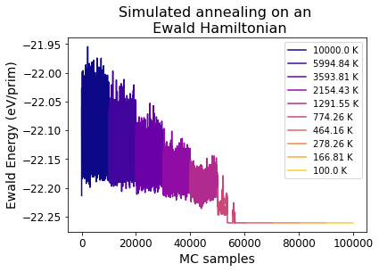

This page was generated from
docs/src/notebooks/running-ewald-sim_anneal.ipynb.
Running Canonical Monte Carlo Simulated Annealing on an Ewald Hamiltonian#
When generating a set of structures to sample, it may be useful to enumerate them through a Monte Carlo (MC) simulation. A MC with only Ewald electrostatic energies can be especially useful for the initial training set, when there are no DFT energies to parametrize a cluster expansion and run MC.
[1]:
import copy
import numpy as np
import matplotlib.pyplot as plt
from monty.serialization import loadfn, dumpfn
from pymatgen.analysis.ewald import EwaldSummation
from pymatgen.core import Structure
from smol.cofe import ClusterSubspace
from smol.cofe.extern import EwaldTerm
0) Create a Cluster Subspace based on the disordered structure with only the empty cluster and Ewald term#
[2]:
lno = loadfn('data/lno_prim.json')
[3]:
empty_cutoff = {} # Defining the cut-offs as an empty dictionary will generate a subspace with only the empty cluster
subspace = ClusterSubspace.from_cutoffs(structure=lno,
cutoffs=empty_cutoff,
supercell_size='O2-')
subspace.add_external_term(EwaldTerm(eta=None)) # Add the external Ewald Term
1) Create an Ewald Processor#
An Ewald Processor handles changes in electrostatic interaction energies among different configurational states, using an Ewald Summation term.
[4]:
from smol.moca import EwaldProcessor
[5]:
# The supercell with which we will run MC on
sc_matrix = np.array([[4, 0, 0],
[0, 4, 0],
[0, 0, 2]])
# Specifying the dielectric constant, the inverse of which is parametrized when fitting a CE with electrostatics (Example 1-1).
dielectric = 5
# Creating the Ewald Processor
ewald_proc = EwaldProcessor(cluster_subspace=subspace,
supercell_matrix=sc_matrix,
ewald_term=EwaldTerm(),
coefficient=1/dielectric)
2) Create a Canonical Ensemble#
[6]:
from smol.moca import Ensemble
# Create the canonical ensemble directly from the Ewald Processor, without creating a Cluster Expansion.
ensemble = Ensemble(processor=ewald_proc)
# If the goal is to enumerate new structures for DFT calculations, it may be wise to limit the size of
# your supercell such that a relaxation calculation is feasible.
# The thermodynamics may not be the most realistic, but you can generate training structures
# that have relatively low electrostatic energies, which may translate to lower DFT energies.
print(f'The supercell size for the processor is {ensemble.processor.size} prims.')
print(f'The ensemble has a total of {ensemble.num_sites} sites.')
print(f'The active sublattices are:')
for sublattice in ensemble.sublattices:
print(sublattice)
The supercell size for the processor is 32 prims.
The ensemble has a total of 128 sites.
The active sublattices are:
Sublattice(site_space=Ni3+0.5 Ni4+0.5 , sites=array([32, 33, 34, 35, 36, 37, 38, 39, 40, 41, 42, 43, 44, 45, 46, 47, 48,
49, 50, 51, 52, 53, 54, 55, 56, 57, 58, 59, 60, 61, 62, 63]), active_sites=array([32, 33, 34, 35, 36, 37, 38, 39, 40, 41, 42, 43, 44, 45, 46, 47, 48,
49, 50, 51, 52, 53, 54, 55, 56, 57, 58, 59, 60, 61, 62, 63]), encoding=array([0, 1]))
Sublattice(site_space=O2-1 , sites=array([ 64, 65, 66, 67, 68, 69, 70, 71, 72, 73, 74, 75, 76,
77, 78, 79, 80, 81, 82, 83, 84, 85, 86, 87, 88, 89,
90, 91, 92, 93, 94, 95, 96, 97, 98, 99, 100, 101, 102,
103, 104, 105, 106, 107, 108, 109, 110, 111, 112, 113, 114, 115,
116, 117, 118, 119, 120, 121, 122, 123, 124, 125, 126, 127]), active_sites=array([], dtype=float64), encoding=array([0]))
Sublattice(site_space=Li+0.5 vacA0+0.5, sites=array([ 0, 1, 2, 3, 4, 5, 6, 7, 8, 9, 10, 11, 12, 13, 14, 15, 16,
17, 18, 19, 20, 21, 22, 23, 24, 25, 26, 27, 28, 29, 30, 31]), active_sites=array([ 0, 1, 2, 3, 4, 5, 6, 7, 8, 9, 10, 11, 12, 13, 14, 15, 16,
17, 18, 19, 20, 21, 22, 23, 24, 25, 26, 27, 28, 29, 30, 31]), encoding=array([0, 1]))
3) Create the Sampler#
[7]:
from smol.moca import Sampler
sampler = Sampler.from_ensemble(ensemble, temperature=10000)
print(f"Sampling information: {sampler.samples.metadata}")
Sampling information: {'kernel': 'Metropolis', 'step': 'swap', 'seed': 113860772837390708981298157429735849979}
4) Generate an initial ordered structure to start the MC simulation.#
[8]:
from pymatgen.transformations.standard_transformations import OrderDisorderedStructureTransformation
# Here we will just use the order disordered transformation from
# pymatgen to get an ordered version of a prim supercell.
# The structure will have the same composition set in the prim.
transformation = OrderDisorderedStructureTransformation(algo=2)
supercell = lno.copy()
supercell.make_supercell(sc_matrix)
test_struct = transformation.apply_transformation(supercell)
print(test_struct.composition)
Li+16 Ni3+16 Ni4+16 O2-64
[9]:
# Obtain the initial occupancy string from the
# test structure created above.
init_occu = ensemble.processor.occupancy_from_structure(test_struct)
# The occupancy strings created by the processor
# are by default "encoded" by the indices of the species
# for each given site. You can always see the actual
# species in the occupancy string by decoding it.
print(f'The encoded occupancy is:\n{init_occu}')
print(f'The initial occupancy is:\n {ensemble.processor.decode_occupancy(init_occu)}')
The encoded occupancy is:
[0 0 1 1 0 0 1 1 1 1 0 0 1 1 0 0 0 0 1 1 0 0 1 1 1 1 0 0 1 1 0 0 1 1 0 0 1
1 0 0 0 0 1 1 0 0 1 1 1 1 0 0 1 1 0 0 0 0 1 1 0 0 1 1 0 0 0 0 0 0 0 0 0 0
0 0 0 0 0 0 0 0 0 0 0 0 0 0 0 0 0 0 0 0 0 0 0 0 0 0 0 0 0 0 0 0 0 0 0 0 0
0 0 0 0 0 0 0 0 0 0 0 0 0 0 0 0 0]
The initial occupancy is:
[Species Li+, Species Li+, Vacancy vacA0+, Vacancy vacA0+, Species Li+, Species Li+, Vacancy vacA0+, Vacancy vacA0+, Vacancy vacA0+, Vacancy vacA0+, Species Li+, Species Li+, Vacancy vacA0+, Vacancy vacA0+, Species Li+, Species Li+, Species Li+, Species Li+, Vacancy vacA0+, Vacancy vacA0+, Species Li+, Species Li+, Vacancy vacA0+, Vacancy vacA0+, Vacancy vacA0+, Vacancy vacA0+, Species Li+, Species Li+, Vacancy vacA0+, Vacancy vacA0+, Species Li+, Species Li+, Species Ni4+, Species Ni4+, Species Ni3+, Species Ni3+, Species Ni4+, Species Ni4+, Species Ni3+, Species Ni3+, Species Ni3+, Species Ni3+, Species Ni4+, Species Ni4+, Species Ni3+, Species Ni3+, Species Ni4+, Species Ni4+, Species Ni4+, Species Ni4+, Species Ni3+, Species Ni3+, Species Ni4+, Species Ni4+, Species Ni3+, Species Ni3+, Species Ni3+, Species Ni3+, Species Ni4+, Species Ni4+, Species Ni3+, Species Ni3+, Species Ni4+, Species Ni4+, Species O2-, Species O2-, Species O2-, Species O2-, Species O2-, Species O2-, Species O2-, Species O2-, Species O2-, Species O2-, Species O2-, Species O2-, Species O2-, Species O2-, Species O2-, Species O2-, Species O2-, Species O2-, Species O2-, Species O2-, Species O2-, Species O2-, Species O2-, Species O2-, Species O2-, Species O2-, Species O2-, Species O2-, Species O2-, Species O2-, Species O2-, Species O2-, Species O2-, Species O2-, Species O2-, Species O2-, Species O2-, Species O2-, Species O2-, Species O2-, Species O2-, Species O2-, Species O2-, Species O2-, Species O2-, Species O2-, Species O2-, Species O2-, Species O2-, Species O2-, Species O2-, Species O2-, Species O2-, Species O2-, Species O2-, Species O2-, Species O2-, Species O2-, Species O2-, Species O2-, Species O2-, Species O2-, Species O2-, Species O2-]
5) Run MC simulated annealing#
[10]:
# Setting up the range of temperatures for simulated annealing. We start at very
# high temperatures to approach the random limit. At each temperature, a MC simulation is performed.
# At the lowest temperatures, you may find that you converge to a ground state.
temps = np.logspace(4, 2, 10)
mc_steps = 100000 # Defining number of MC steps at each temperature
n_thin_by = 10 # Number to thin by
# Start simulated annealing.
sampler.anneal(
temperatures=temps,
mcmc_steps=mc_steps,
initial_occupancies=init_occu,
thin_by=n_thin_by, # Saving every 10 samples
progress=True # Show the progress bar to know how far along you are
)
Sampling 1 chain(s) from a cell with 128 sites...: 100%|███████████████████████████████████████████████████████████████| 100000/100000 [00:15<00:00, 6622.09it/s]
Sampling 1 chain(s) from a cell with 128 sites...: 100%|███████████████████████████████████████████████████████████████| 100000/100000 [00:19<00:00, 5182.36it/s]
Sampling 1 chain(s) from a cell with 128 sites...: 100%|███████████████████████████████████████████████████████████████| 100000/100000 [00:14<00:00, 6695.68it/s]
Sampling 1 chain(s) from a cell with 128 sites...: 100%|███████████████████████████████████████████████████████████████| 100000/100000 [00:14<00:00, 6780.63it/s]
Sampling 1 chain(s) from a cell with 128 sites...: 100%|███████████████████████████████████████████████████████████████| 100000/100000 [00:14<00:00, 6668.70it/s]
Sampling 1 chain(s) from a cell with 128 sites...: 100%|███████████████████████████████████████████████████████████████| 100000/100000 [00:14<00:00, 6976.41it/s]
Sampling 1 chain(s) from a cell with 128 sites...: 100%|███████████████████████████████████████████████████████████████| 100000/100000 [00:14<00:00, 6903.15it/s]
Sampling 1 chain(s) from a cell with 128 sites...: 100%|███████████████████████████████████████████████████████████████| 100000/100000 [00:14<00:00, 6955.37it/s]
Sampling 1 chain(s) from a cell with 128 sites...: 100%|███████████████████████████████████████████████████████████████| 100000/100000 [00:14<00:00, 6921.88it/s]
Sampling 1 chain(s) from a cell with 128 sites...: 100%|███████████████████████████████████████████████████████████████| 100000/100000 [00:16<00:00, 5973.91it/s]
6) Analyzing MC sampling at each temperature#
[11]:
n = int(mc_steps/10) # number of samples saved for the MC at each temperature
energies = sampler.samples.get_energies()
mc_temps = list() # Create list of temperatures that correspond to the energies
for t in temps:
mc_temps.extend([t for i in range(n)])
[12]:
# Obtain the average and standard deviation of energy at each temperature.
for t in temps:
plot_inds = np.where(mc_temps == t)[0]
energies_t = np.array([energies[ind] for ind in plot_inds]) / ewald_proc.size
avg_en = round(np.average(energies_t), 3)
std_en = round(np.std(energies_t), 4)
print(f'At T = {round(t, 2)} K \nAverage energy = {avg_en} eV/prim \nStd dev = {std_en} eV/prim \n')
At T = 10000.0 K
Average energy = -22.114 eV/prim
Std dev = 0.0319 eV/prim
At T = 5994.84 K
Average energy = -22.133 eV/prim
Std dev = 0.026 eV/prim
At T = 3593.81 K
Average energy = -22.155 eV/prim
Std dev = 0.0201 eV/prim
At T = 2154.43 K
Average energy = -22.177 eV/prim
Std dev = 0.0155 eV/prim
At T = 1291.55 K
Average energy = -22.197 eV/prim
Std dev = 0.012 eV/prim
At T = 774.26 K
Average energy = -22.25 eV/prim
Std dev = 0.0146 eV/prim
At T = 464.16 K
Average energy = -22.261 eV/prim
Std dev = 0.0 eV/prim
At T = 278.26 K
Average energy = -22.261 eV/prim
Std dev = 0.0 eV/prim
At T = 166.81 K
Average energy = -22.261 eV/prim
Std dev = 0.0 eV/prim
At T = 100.0 K
Average energy = -22.261 eV/prim
Std dev = 0.0 eV/prim
Obtaining the ground state#
[15]:
lowest_en = sampler.samples.get_minimum_energy() / ewald_proc.size
lowest_en_occu = sampler.samples.get_minimum_energy_occupancy()
lowest_en_struct = ensemble.processor.structure_from_occupancy(lowest_en_occu)
print(f'The ground state energy is {lowest_en} eV/prim')
print(f'Ground state structure is {lowest_en_occu}\n')
The ground state energy is -22.26063356093077 eV/prim
Ground state structure is [0 0 0 1 1 1 0 1 1 0 0 0 1 0 1 1 1 1 0 1 0 0 0 1 1 0 1 1 1 0 0 0 0 0 1 0 1
1 1 0 0 1 0 0 0 1 1 1 1 1 1 0 0 0 1 0 0 1 1 1 0 1 0 0 0 0 0 0 0 0 0 0 0 0
0 0 0 0 0 0 0 0 0 0 0 0 0 0 0 0 0 0 0 0 0 0 0 0 0 0 0 0 0 0 0 0 0 0 0 0 0
0 0 0 0 0 0 0 0 0 0 0 0 0 0 0 0 0]
7) Plotting the results#
[16]:
x_ind = 0 # To keep track of x axis indexing
for i, t in enumerate(temps):
plot_inds = np.where(mc_temps == t)[0]
energies_t = np.array([energies[ind] for ind in plot_inds]) / ewald_proc.size # Obtain normalized energies at this temperature
col = plt.cm.plasma(i/len(temps)) # Set the color
num_samples = len(energies_t)
plt.plot(np.arange(x_ind, x_ind + num_samples), energies_t, color=col,
label=f'{round(t, 2)} K')
x_ind += num_samples
plt.legend()
plt.title('Simulated annealing on an \n Ewald Hamiltonian', fontsize=16)
plt.ylabel('Ewald Energy (eV/prim)', fontsize=14)
plt.xlabel('MC samples', fontsize=14)
plt.xticks(fontsize=12)
plt.yticks(fontsize=12)
[16]:
(array([-22.3 , -22.25, -22.2 , -22.15, -22.1 , -22.05, -22. , -21.95,
-21.9 ]),
[Text(0, 0, ''),
Text(0, 0, ''),
Text(0, 0, ''),
Text(0, 0, ''),
Text(0, 0, ''),
Text(0, 0, ''),
Text(0, 0, ''),
Text(0, 0, ''),
Text(0, 0, '')])

[ ]: